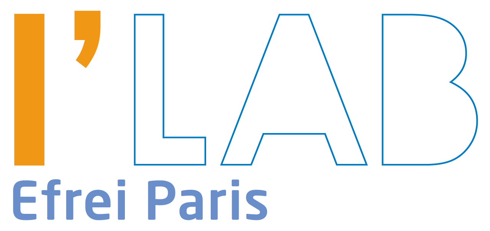

Foire aux questions

Dois-je payer quelque chose ?
Non, l’accès à l’Innovation Lab est gratuit.
Que fait-on à l’Innovation Lab ? Puis je y mener des projets personnels ?
Oui, tous les projets sont les bienvenus : Entrepreneurial, personnel, associatif, académique…
Cependant, ces projets doivent être renseignés via une fiche projet. Cette fiche est courte et simple à remplir.
Dois-je fournir mes bobines de filament pour imprimer en 3D?
Les bobines pour l’impression 3D sont fournies, les utilisateurs
n’ont pas à apporter de filament. Les changements de bobines et
la maintenance des machines sont sous la responsabilité des
étudiants encadrants.
Dois-je fournir le consommable pour la découpe laser?
Oui, mais il est possible que vous trouviez votre bonheur dans les
chutes mises gratuitement à la disposition de tous.
… et si j’ai besoin de plus de consommable ?
Pour les grandes découpes, c’est à vous de fournir le
consommable. Si vous le laissez sur place, il faudra
impérativement l’étiqueter avec la date et un e-mail. A noter
qu’un état des lieux en fin de semestre rebascule tout le
consommable dans le pot commun. Le stockage est limité dans le
temps.
Puis je laisser du matériel ?
Du stockage est mis à disposition le temps d’un semestre. Vous pouvez utiliser les casiers gris en y
mettant votre nom et la date. Les casiers seront vidés lors de l’état des lieux de fin de semestre.
L’Innovation Lab est il ouvert le samedi ?
Si vous êtes étudiant encadrant, vous pouvez utiliser le lieu quand vous le souhaitez, sous réserve que
le campus soit ouvert. En tant qu’utilisateurs, vous pouvez seulement venir durant les permanences.
Comment devenir étudiant encadrant ?
Lorsque vous êtes étudiants encadrants, vous bénéficiez d’un accès privilégié à l’Innovation Lab, sous
réserve que vous soyez disponibles pour une permanence hebdomadaire. Vous pouvez déjà vous
familiariser avec le lieu en tant qu’utilisateur et passer quelques formations puis devenir encadrants
en envoyant votre demande à remi.griot@efrei.fr